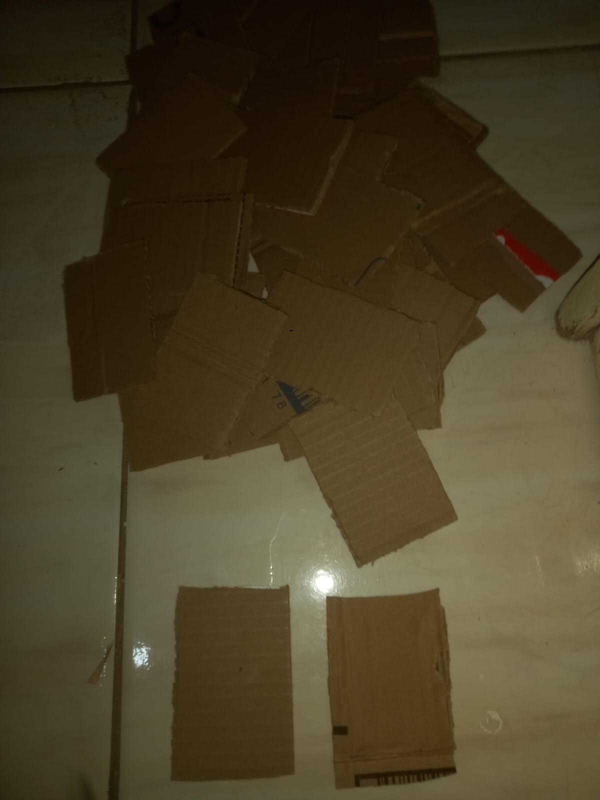
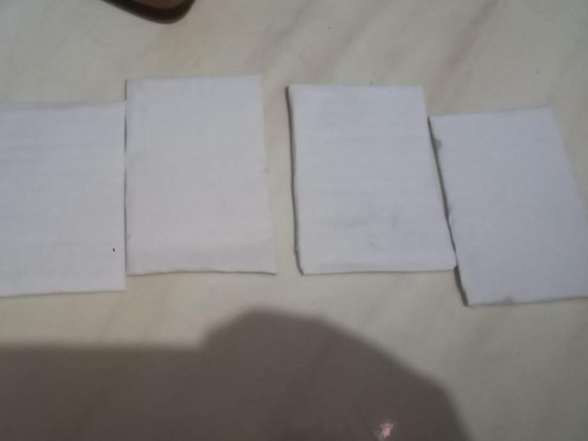
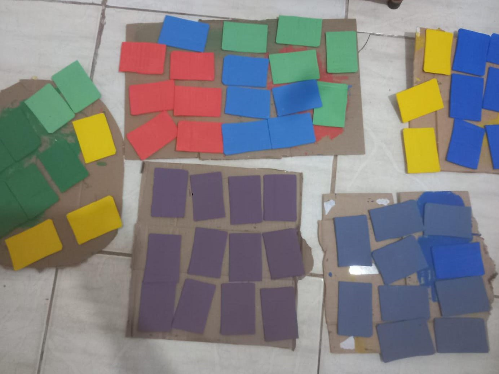
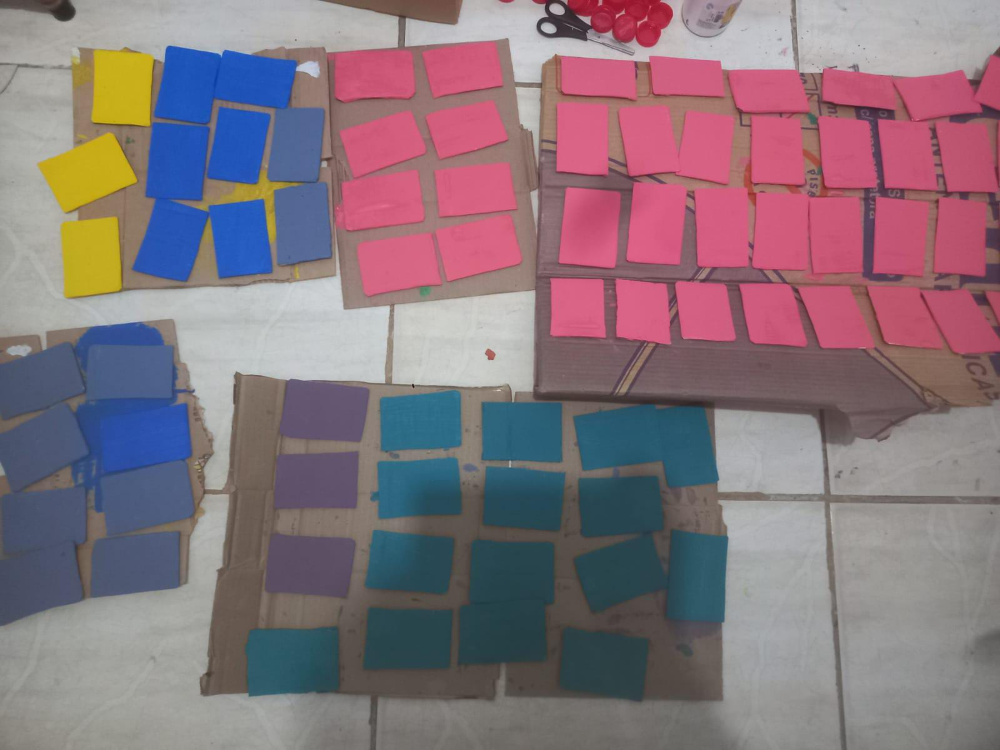
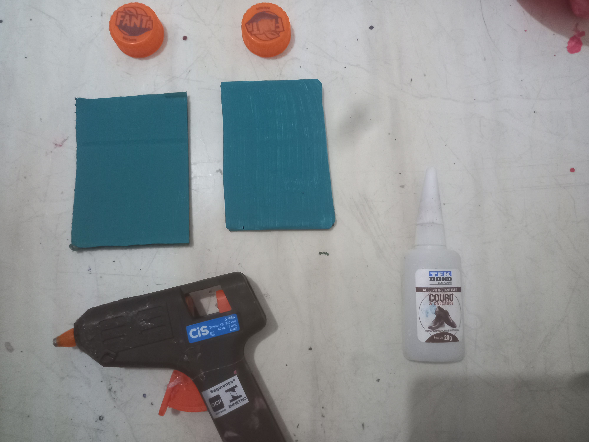
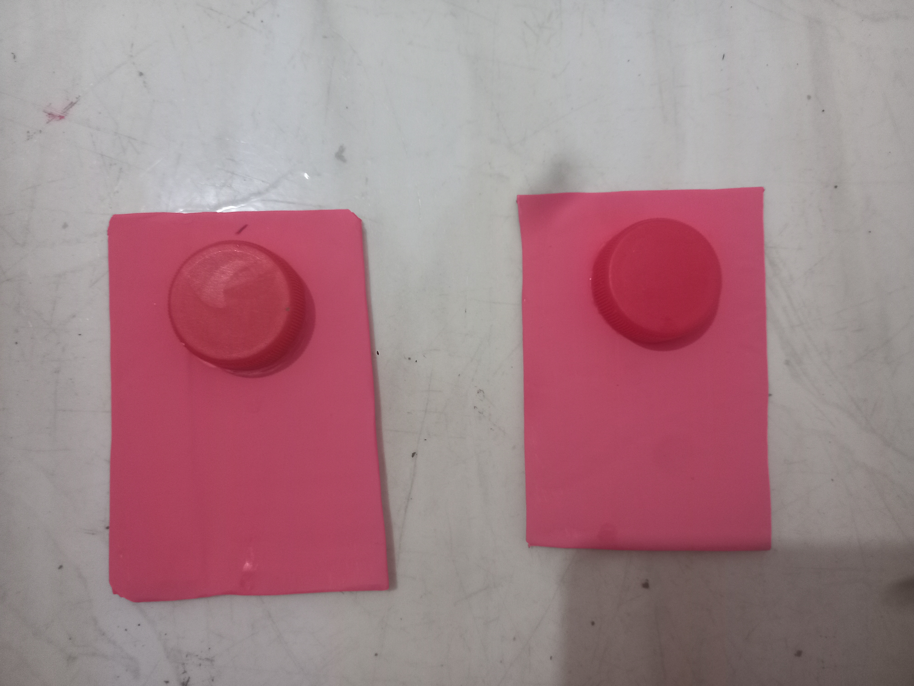
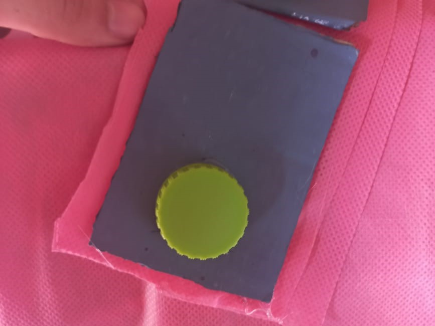
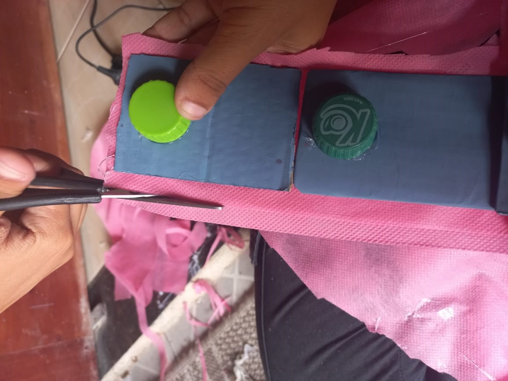

Pincéis para o uso de Tinta Guache e aplicação da Cola Branca;
Pistola e Tubos de Cola Quente;
Tintas Guache de sua preferência(utilizamos as 4 cores primárias e a partir delas, criamos outras
cores);
Cola Branca e Tekbond;
118 Tampinhas de Garrafa Pet;
2 metros de tecido TNT (cor da sua preferência);
Caneta Permanente (branca e preta ou da cor de sua preferência);
Identificador em Braille.
Como fazer?
Separe uma grande quantidade de papelão e faça uma marcação com o lápis grafite de um quadrado medindo
3x5 cm. Corte 118 quadrados na medida dada anteriormente com o auxílio de um estilete. Em seguida,
recorte com a tesoura a folha ofício branca A4, cole sobre o papelão com a cola branca utilizando um
pincel em apenas em um lado de todos os quadrados.


Pinte os quadrados com tinta guache separando 1 cor para cada família da tabela periódica.
EX:
7 não metais : verde escuro;
6 metais alcalinos: laranja;
6 metais alcalinos-terrosos: amarelo;
7 gases nobres: azul escuro;
6 halogênios: azul claro;
7 semimetais: verde claro;
11 outros metais: cinza;
15 actinídnios: roxinho claro;
15 lantanídeos: azul petróleo;
38 metais de transição: rosinha.
OBS: o guia acima é opcional mas pode ser usado com o exemplo


Após a tinta de todos os quadrados secarem, cole na parte superior ( 1 cm antes da borda) a tampa de
garrafa pet com cola quente ou tekbond.


Utilize a pistola de cola quente para colar no verso do quadrado (parte que não está pintada e sem a
tampinha) duas camadas do tecido TNT, corte com auxílio de uma tesoura seguindo os formatos de cada
família da tabela para que futuramente, cada parte se encaixe como um quebra cabeça. Posteriormente,
escreva logo a baixo da tampinha a sigla de cada elemento com a caneta de sua preferência.


Cole a escrita em braille de cada elemento correspondente sobre a tampinha de garrafa pet.